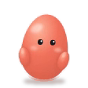

Your data is in
 Fabric.
Fabric.
So many tables.
What do they mean
for your business?
for your business?
Just ask.
A few taps.
Boom.
Ontology preview
customer → order → invoice
Data products
in the OneLake catalog
Fabric app preview
ready to publish

Krusgraph
Ontologies, data products
and apps in a few taps.
and apps in a few taps.
krusgraph.com
Demo on synthetic data. Ontology and Fabric apps are Fabric previews.
Krusgraph is independent and not affiliated with Microsoft.
Krusgraph is independent and not affiliated with Microsoft.
